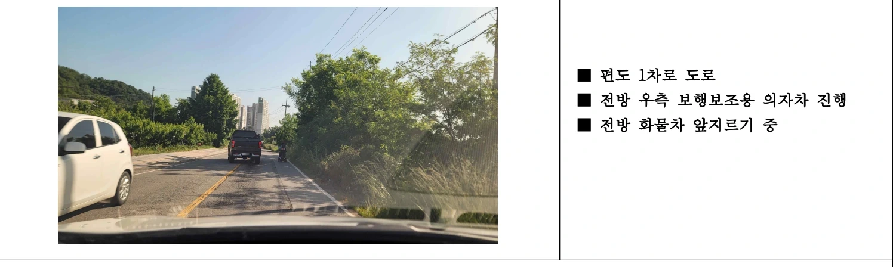

780. Hai cách lái xe nào là an toàn nhất trong tình huống sau?

- ①Xe dạng ghế hỗ trợ đi bộ được xem như là người đi bộ, nên cần đảm bảo giữ một khoảng cách vừa đủ.
- ②Khi xe chở hàng phía trước đã vượt xong thì bám theo ngay phía sau và vượt lên trước.
- ③Vì không thể kiểm tra tình hình phía trước nên bám sát theo sau xe chở hàng.
- ④Vì xe dạng ghế hỗ trợ đi bộ phải lưu thông trên vỉa hè nên có thể nhấn còi và yêu cầu họ đi lên vỉa hè bên trái.
- ⑤Bật đèn nháy khẩn cấp và lái xe chậm để cảnh báo các xe đi sau về tình huống nguy hiểm phía trước.
Xem đáp án
Đáp án
① Xe dạng ghế hỗ trợ đi bộ được xem như là người đi bộ, nên cần đảm bảo giữ một khoảng cách vừa đủ.
⑤ Bật đèn nháy khẩn cấp và lái xe chậm để cảnh báo các xe đi sau về tình huống nguy hiểm phía trước.
Căn cứ
Xe ghế hỗ trợ đi bộ tuy được coi là dành cho người đi bộ nhưng thường không sử dụng vỉa hè nên khi phát hiện xe ghế hỗ trợ đi bộ phải đảm bảo an toàn giống như bảo vệ người đi bộ. Vượt bằng cách vượt qua vạch giữa là nguy hiểm và không phải là phương pháp lái xe an toàn, đồng thời bám ngay theo xe vượt phía trước rất nguy hiểm.
Phần căn cứ là bản dịch máy để tham khảo.